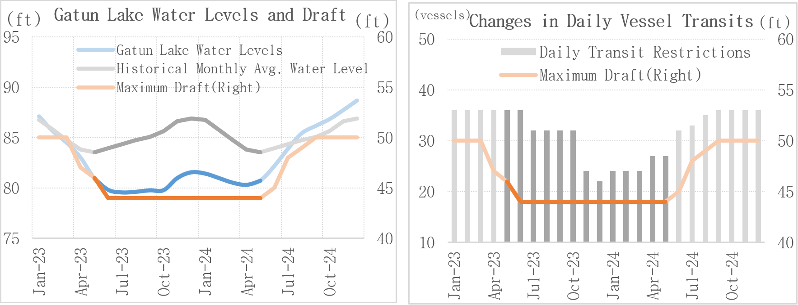
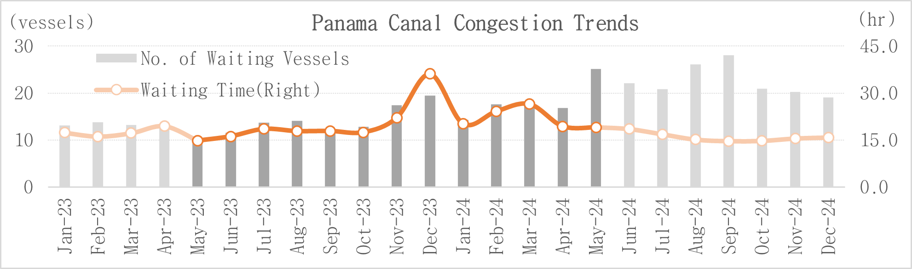

Samsung SDSMay 29, 2026
What Risks Could a 2026 "Super El Niño" Pose to Panama Canal Transit?
- The National Oceanic and Atmospheric Administration (NOAA) and the World Meteorological Organization (WMO) indicate that the likelihood of an El Niño event developing during May to July 2026 is increasing. They also note that the possibility of it intensifying into a Super El Niño between October 2026 and February 2027 cannot be ruled out.
- El Niño-related reductions in rainfall and drought conditions across Central and northern South America can lower water levels in Gatun Lake, the primary water source for the lock-based Panama Canal. This directly constrains the canal's operating capacity. During the 2023–2024 El Niño event, the maximum allowable vessel draft declined from 50 ft to 44 ft, and daily transit capacity (all vessel types) from dropped from approximately 36–38 vessels to 22 vessels.
- While container vessel transits remained relatively stable at around seven vessels per day, similar to pre-El Niño levels, cargo capacity was significantly affected. For a 15,000 TEU-class container ship, the draft restriction resulted in a cargo loss of up to 2,100 TEU (-14%). In addition, low-water surcharges were passed on to shippers, creating upward pressure on freight rates.
- Based on the 2023 experience, operational impacts will become more pronounced between late this year and early next year as the region enters the dry season. Therefore, monitoring Gatun Lake water level, precipitation, transit volume and surcharge, and setting up response plans for the event are required.
Comparison: Normal Operations vs. Severe El Niño Low-Water Conditions (Based on 2023–2024 Data)
| Category | Normal Operations | Severe El Niño Low-Water Conditions |
|---|---|---|
| Maximum Allowable Draft | 50ft | 44ft |
| Daily Transit Capacity (All Vessel Types) | 36–38 vessels | 22 vessels |
| Daily Transits (Container Ship) | Approximately 7 vessels/day | Approximately 7 vessels/day |
| Average Number of Waiting Vessels | 13.3 vessels | 17.3 vessels |
| Average Waiting Time | 17.5 hours | 25.8 hours |
| Cargo Capacity of a 15,000 TEU Container Ship | Full capacity | Up to approximately 2,100 TEU reduction (-14%) |
2026: Elevated Risk of a "Super El Niño"
1) What is El Niño?
“El Niño” is defined as a climate phenomenon in which the Oceanic Niño Index (ONI), measured as the three-month running average sea surface temperature anomaly in the equatorial Pacific monitoring region, remains at +0.5°C or higher for at least five consecutive months. When the ONI remains at +2.0°C or higher for an extended period, the event is generally classified as a “Super El Niño.”
2) Outlook from Major Organizations
According to forecasts from the National Oceanic and Atmospheric Administration (NOAA), an El Niño event is expected to develop between May and July 2026, with a heightened possibility of intensifying into a Super El Niño between October 2026 and February 2027. The World Meteorological Organization (WMO) also projects a high likelihood of El Niño conditions emerging during May to July, accompanied by an increased risk of high temperatures and drought conditions across parts of Central and northern South America.
| Organization | Outlook |
|---|---|
| NOAA | El Niño is expected to develop between May and July, with a high likelihood of intensifying into a “Super El Niño” between October and February of the following year. |
| WMO | A high probability of El Niño development during May to July, accompanied by an increased tendency toward higher temperatures and drought conditions across Central and northern South America. |
3) Logistics Impact
El Niño is widely regarded as a major climate risk affecting ocean transportation, port operations, and water resource management. In particular, reduced rainfall and drought conditions across Central and northern South America can have a direct impact on the operation of the Panama Canal.
As a lock-based canal, the Panama Canal requires approximately 200 million liters of freshwater to move a single vessel through its locks, equivalent to about 80 Olympic-size swimming pools. As a result, the water level of Gatun Lake plays a critical role in determining the canal's operational capacity.
Previous Panama Canal Cases (2023–2024)
1) Draft and Transit Restrictions
The 2023 El Niño event lasted for approximately 13 months, contributing to a significant decline in Gatun Lake's water levels. During the El Niño period, the average water level of Gatun Lake was approximately 80.5 ft, with a low of 79.5 ft, substantially below the 20-year historical average (2000–2019) of 85.2 ft. As water levels continued to decline, the maximum allowable vessel draft was reduced from 50 ft to 44 ft, and daily transit capacity went down from 36–38 vessels to 22 vessels per day.
These measures were necessary to conserve water resources while maintaining canal operations under severe drought conditions.

2) Increased Canal Congestion
During the early stages of El Niño, the number of waiting vessels and average waiting times remained broadly in line with pre-El Niño levels. However, as low water levels persisted and transit restrictions became more stringent, congestion in the Panama Canal increased significantly from November 2023 onward.
| Category |
Pre-El Niño (Jan–Apr 2023) |
Early El Niño (May–Oct 2023) |
Severe El Niño Phase (Nov 2023–Mar 2024) |
|---|---|---|---|
| Avg. Number of Waiting Vessels | 13.3 vessels | 12.4 vessels | 17.3 vessels |
| Avg. Waiting Time | 17.5 hours | 17.1 hours | 25.8 hours |
※ Compared with the early El Niño period, average number of waiting vessels increased by 39.2%, Average waiting time increased by 51.0%
Operational bottlenecks expanded due to draft restrictions, reduced transit slots, and longer waiting times for non-reserved vessels.

3) Cargo Capacity Loss
Although daily transit capacity was restricted due to declining water levels in Gatun Lake, the impact varied by vessel type.
| Vessel Type | Change in Transit Volume | Key Impact |
|---|---|---|
| Container Vessels | Maintained at approx. 7 vessels per day (supported by advance slot reservations) | When the maximum allowable draft was reduced from 50 ft to 44 ft, a 15,000 TEU-class container vessel experienced a loading capacity reduction of up to 2,100 TEU (-14%) |
The impact of low water levels on container shipping was reflected less in the number of vessel transits and more in reduced scheduling flexibility, increased operating costs, such as difficulty of securing transit slots, and a decline in effective cargo capacity. Actual cargo capacity losses may vary depending on factors such as draft restrictions, vessel design, and trade routes.
4) Surcharge Implementation
Beginning in the second half of 2023, major shipping lines introduced surcharges related to Panama Canal low-water conditions, including Canal Surcharges, Low Water Surcharges, and Drought Surcharges.
| Carrier | Surcharge per TEU (at the time of implementation) |
|---|---|
| Maersk | $175 |
| CMA CGM | $150 |
| Hapag-Lloyd | $130 |
| Cosco | $255 |
※ Note: Surcharge names, rates, and implementation dates may vary depending on canal water levels, trade routes, and market conditions.
The impact of low water levels in the Panama Canal extended beyond transit delays. Additional vessel deployment, extra sailings, and higher slot acquisition costs increased carriers' operating expenses, which were subsequently passed on to shippers through surcharges, creating upward pressure on freight rates.
Outlook
| Key Variable | Timing | Potential Impact |
|---|---|---|
| El Niño Persistence | Summer 2026 to Early 2027 | Possibility of developing into a Super El Niño cannot be ruled out |
| Draft and Transit Restrictions | Late 2026 to Early 2027 | Pressure expected to intensify as the region enters the dry season |
| Panama Canal Authority (PCA) Transit Policy | Will be maintained this year (38 transits per day) | Operational restrictions could be reinstated if a strong Super El Niño develops |
- Major meteorological agencies forecast a high likelihood that El Niño conditions will persist from summer 2026 through early 2027, with the potential to strengthen into a Super El Niño.
- Based on the 2023 experience, the most significant impacts are likely to emerge not during the initial phase of El Niño, but after prolonged rainfall deficits accumulate and the region transitions into the dry season. As a result, pressure from draft restrictions and reduced daily transit capacity may intensify during late 2026 and early 2027.
- Current transit volumes have been supported by increased energy shipments to the Americas following disruptions in the Strait of Hormuz. While the Panama Canal Authority has stated that it intends to maintain 38 daily transits and currently has no plans to impose additional restrictions this year, the possibility of renewed operational constraints remains if a severe Super El Niño materializes.
- Continuous monitoring of Gatun Lake water levels, regional precipitation, daily transit volumes, and carrier surcharge developments is recommended, along with the establishment of contingency plans to mitigate potential disruptions caused by future transit restrictions.
Frequently Asked Questions (FAQ)
- Q. Do Panama Canal transit restrictions begin immediately after an El Niño event develops?
-
A. No. Transit restrictions did not begin immediately after the onset of El Niño. The increased operational costs were passed on to shippers through Canal, Low Water and Drought Surcharge due to reduced scheduling flexibility, pressure on securing slots, etc.
It began in earnest in November 2023, when low water level accumulated. During the early phase of the 2023 event (May–October 2023), the number of waiting vessels and average waiting times remained similar to pre-El Niño levels. Draft and transit restrictions tend to become more pronounced after prolonged rainfall deficits led to lower water levels.
- Q. How much cargo capacity is lost when the maximum allowable draft is reduced from 50 ft to 44 ft?
- A. For a 15,000 TEU-class container vessel, reducing the maximum allowable draft from 50 ft to 44 ft can result in a cargo capacity loss of up to 2,100 TEU (approximately 14%). Actual capacity reductions may vary depending on factors such as vessel design, draft restriction levels, and trade routes.
- Q. Why do container freight rates increase even when the number of container vessel transits remains stable?
- A. Freight rates can rise even when transit volumes remain stable because of reduced effective cargo capacity and low water level surcharges. Although container vessels maintained approximately four transits per day through advance slot reservations, the increased operational costs were passed on to shippers as Canal·Low Water·Drought Surcharge due to reduced scheduling flexibility, pressure on securing slots, etc.
- Q. Should companies still prepare for potential transit restrictions even though Panama Canal traffic has recently increased?
- A. Yes. Preparation remains advisable. The recent increase in transit volumes has been driven largely by higher energy shipments to the Americas following disruptions in the Strait of Hormuz, rather than by the elimination of El Niño-related risks. While the Panama Canal Authority has stated that it intends to maintain 38 daily transits and currently has no plans to impose additional restrictions this year, operational constraints could re-emerge if a strong Super El Niño develops.
- Q. How does Cello Square support customers in managing Panama Canal transit risks?
- A. Cello Square, the digital integrated logistics platform operated by Samsung SDS, helps customers make optimal route decisions based on total cost comparisons by route and real-time quotes, accounting for canal restrictions and fluctuating surcharges. Leveraging its global network, it allows for the comparisons of alternative route scenarios in response to changes in Gatun Late water levels and transit volume, as well as integrated management of slot acquisition and delivery schedules.
📎References
- NOAA (National Oceanic and Atmospheric Administration) – El Niño and Oceanic Niño Index (ONI) Outlook
- WMO (World Meteorological Organization) – El Niño Development Outlook and Climate Forecasts for Central and Northern South America
- Panama Canal Authority (PCA) – Announcements on Draft Restrictions, Transit Capacity Adjustments, and Canal Operating Policies
- Carrier Advisories – Low-Water and Drought Surcharges Issued by Maersk, CMA CGM, Hapag-Lloyd, and COSCO Shipping
- Samsung SDS Logistics Market Intelligence (MI) Internal Analysis, May 29, 2026
Respond to Canal Transit Risks with Cello Square
Cello Square, the digital integrated logistics platform operated by Samsung SDS, helps businesses assess supply chain exposure to climate and canal-related disruptions while supporting data-driven, total-cost-based decision making. By leveraging its global network, integrate your logistics operations from comparing real-time quotes by route, reviewing alternative routing options to responding to customs clearance.


Become a member of Cello Square to
receive more detailed logistics reports!